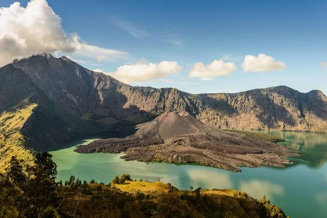
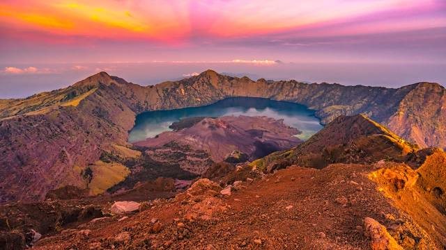
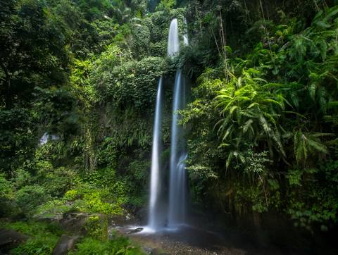
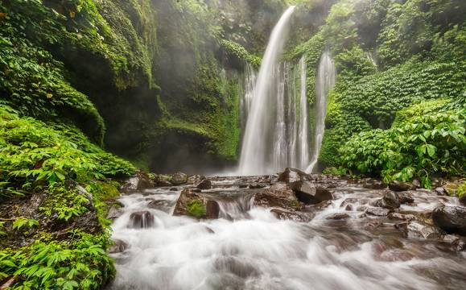

2.Gunung Rinjani
Gunung Rinjani adalah gunung yang berlokasi di Pulau Lombok, Nusa Tenggara Barat. Gunung yang merupakan gunung berapi kedua tertinggi di Indonesia dengan ketinggian 3.726 mdpl serta terletak pada lintang 8º25' LS dan 116º28' BT ini merupakan gunung favorit bagi pendaki Indonesia karena keindahan pemandangannya. Gunung ini merupakan bagian dari Taman Nasional Gunung Rinjani yang memiliki luas sekitar 41.330 ha dan ini akan diusulkan penambahannya sehingga menjadi 76.000 ha ke arah barat dan timur. Secara administratif gunung ini berada dalam wilayah tiga kabupaten: Lombok Timur, Lombok Tengah, dan Lombok Barat. Penguasa Gunung Rinjani ini bernama DENDA PUSPA LESTARI



3.Air Terjun Sendang Gile
Air terjun Sendang Gile adalah air terjun yang terletak di desa Senaru, kecamatan Bayan, kabupaten Lombok Utara, propinsi Nusa Tenggara Barat. Lebih tepatnya berada di kawasan desa Senaru, 2 kilometer dari desa Bayan. Objek wisata ini masih berada dalam kawasan Taman Nasional Gunung Rinjani. Ini disebabkan karena air terjun ini merupakan pintu masuk pendakian menuju gunung Rinjani. Selain itu, ternyata air di Sendang Gile berasal dari mata air di Gunung Rinjani yang sangat sejuk dan alami. Untuk menuju ke tempat ini, para pengunjung harus melalui dua ratusan anak tangga yang mencapai ketinggian 40 meter, dan jembatan berlubang melalui sebuah lembah yang membutuhkan waktu penjelajahan sekitar 15 menit. Perjalanan alternatif juga bisa dilakukan dengan cara menyelusuri pinggir lembah yang agak curam dan mengikuti saluran irigasi serta menyeberangi jembatan yang terbuat dari rotan. Air terjun ini sering juga di sebut oleh penduduk setempat sebagai Batu Ko’. Menurut cerita rakyat setempat, dulu Sendang Gile adalah tempat bidadari mandi ketika turun ke bumi.
